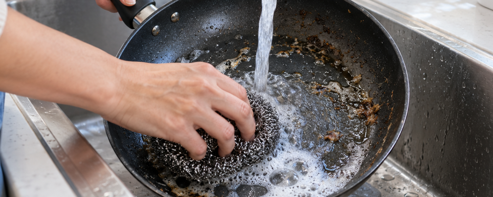
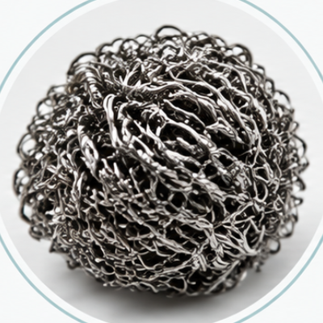
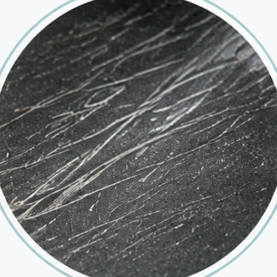
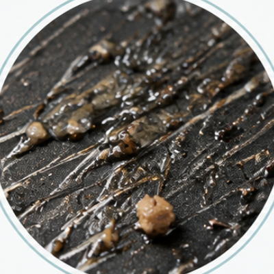
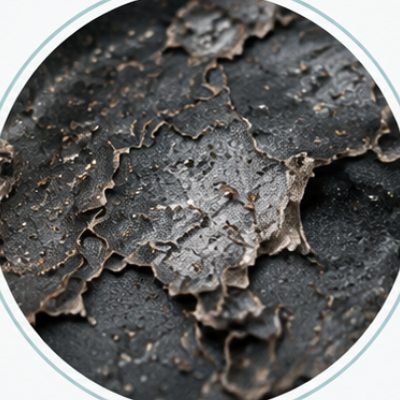

세척 성능만으로 적합한 세척 방식을 판단할 수는 없습니다.
표면 영향, 2차 폐기물, 수분, 작업시간과 설비 정지 등
산업현장에서 함께 고려해야 할 요소를 기준으로 주요 세척 방식을 비교해보세요.
산업현장에서 세척은 단순히 오염물을 제거하는 작업으로 끝나지 않습니다.
목표한 청정도를 확보하는 것은 기본이고, 그 과정에서 금형·생산설비·부품 및 제품 표면에 영향을 주지 않는지, 새로운 폐기물이나 폐수가 발생하는지, 세척을 위해 어느 정도의 생산 중단이 필요한지, 그리고 작업자의 안전과 주변 공정에 어떤 영향을 미치는지까지 함께 검토해야 합니다.
예를 들어 연마재를 사용하는 세척은 강한 제거력이 필요한 작업에 효과적이지만 사용한 매체의 회수와 처리가 필요할 수 있고, 물을 사용하는 세척은 폐수와 건조 공정까지 고려해야 합니다. 수작업이나 화학세척 역시 적용이 간편한 반면 작업시간과 인력, 설비 분해·재조립이 전체 유지보수 시간에 영향을 줄 수 있습니다.
드라이아이스 세척의 가장 큰 차이는 고체 CO₂를 세정 매체로 사용하고, 분사된 드라이아이스가 표면 충돌 후 기체로 승화한다는 점입니다. 따라서 물이나 연마재와 같은 세정 매체가 작업 후 표면에 남지 않는 건식 세척이 가능합니다.
세척 대상은 오염물이지만,
보호해야 할 대상은 설비와 제품입니다.
| 세척 방식 | 세정 원리 | 표면 영향 | 세정 매체 잔류 | 2차 처리 | 수분 | 주요 특징 |
|---|---|---|---|---|---|---|
| 드라이아이스 세척DRY ICE | 고체 CO₂ 입자의 충격·냉각·승화 | 비마모성 / 세척 조건 조정 가능 | 없음 | 제거된 오염물 처리 | 없음 | 건식 / 비마모 / 세정 매체 잔류 없음 |
| 연마·샌드 블라스팅ABRASIVE | 연마 입자의 물리적 충격 | 표면 프로파일 또는 표면 변화 가능 | 있음 | 오염물과 사용 연마재 처리 | 없음 | 높은 제거력 / 표면처리 가능 |
| 레이저 세정LASER | 레이저 에너지 | 재질과 공정조건에 따라 달라짐 | 없음 | 제거물 및 발생 흄 관리 | 없음 | 정밀한 비접촉 세정 |
| 수작업·화학세척MANUAL / CHEMICAL | 물리적 제거 또는 화학적 용해 | 도구와 약품에 따라 달라짐 | 약품·와이퍼 등 발생 가능 | 폐용제 및 소모품 처리 | 방식에 따라 다름 | 간편하고 범용적 / 인력 의존 |
| 고압수 세척PRESSURE WASHING | 고압수의 충격 | 압력과 재질에 따라 달라짐 | 물이 남음 | 폐수 처리 | 있음 | 넓은 면적의 일반 세척에 효과적 |
| 소다 블라스팅SODA | 압축공기로 고형 세정 매체 분사 | – | 작업 후 남음 | 소다와 제거 오염물 회수 및 처리 | – | 드라이아이스는 분사 후 승화하지만, 소다는 고형 매체가 작업 후 남음 |
– 표기는 참고 자료에서 별도로 다루지 않은 항목입니다. 실제 결과는 재질, 오염물, 장비 설정과 작업 환경에 따라 달라질 수 있습니다.

코팅 프라이팬을 깨끗하게 닦겠다고 철수세미를 사용하지는 않습니다.
오염은 쉽게 제거될 수 있지만, 반복적인 마찰은 표면과 코팅을 손상시키고 결국 제품의 수명을 단축시킬 수 있기 때문입니다.
우리는 일상에서도 이미 알고 있습니다. 세척은 단순히 ‘얼마나 잘 닦이는가’만의 문제가 아니라는 것을.
산업현장도 다르지 않습니다.
생산설비와 금형은 반복적으로 세척되고, 부품과 제품의 표면 역시 세척 과정에서 본래의 상태를 유지해야 합니다.
따라서 한 번의 세척 성능뿐 아니라, 세척 과정에서 표면 상태와 치수, 기능과 외관 품질이 얼마나 유지되는지, 그리고 반복적인 세척이 장기적으로 설비와 생산품에 어떤 영향을 주는지까지 함께 고려해야 합니다.
연마재를 사용하는 세척 방식은 강한 제거력과 표면처리가 필요한 작업에 적합할 수 있습니다. 반면 금형, 설비, 정밀 부품과 제품 표면처럼 원래 상태를 유지하면서 오염물만 제거해야 하는 경우에는 다른 접근이 필요합니다.

철수세미거친 도구로 세척
표면 스크래치코팅·표면에 미세 손상
반복 오염손상된 표면에 오염이 더 쉽게 고착
표면 열화 / 수명 단축치수·표면 상태 변화, 설비 수명과 제품 품질에 영향좋은 세척은 더 강하게 닦는 것이 아니라,
필요한 오염물은 제거하고
지켜야 할 표면은 지키는 것입니다.
세정 성능과 표면에 가해지는 공격성은
같은 의미가 아닙니다.
잘 닦이는 것보다 더 중요한 것은,
세척 후에도 원래의 상태를 유지하는 것입니다.

연마 블라스팅은 분쇄 유리, 플라스틱 비드, 기타 고형 매체를 압축공기로 가속하여 오염물을 물리적으로 제거하는 방식입니다.
강한 오염 제거와 표면처리에 효과적이지만, 사용되는 매체와 분사 조건에 따라 표면 침식, 패임 또는 표면 프로파일 변화가 발생할 수 있습니다. 따라서 정밀 금형, 생산설비, 치공구와 정밀 부품처럼 치수와 표면 상태를 유지해야 하는 대상에서는 연마재가 미치는 영향을 충분히 검토해야 합니다.
작업 후에는 사용된 연마재와 제거된 오염물이 함께 남기 때문에 회수와 처리가 필요합니다.
드라이아이스는 모스 경도 약 1.5~2 수준의 비교적 부드러운 매체이며, 적절한 분사 조건에서는 모재를 연마하거나 의도적인 표면 프로파일을 형성하지 않고 오염물을 제거하는 데 적합합니다.
또한 드라이아이스는 충돌 후 기체로 승화하기 때문에 사용한 세정 매체를 별도로 회수할 필요가 없습니다.
표면을 가공하는 세척과,
표면은 유지하면서 오염물만 제거하는 세척은 목적이 다릅니다.
— 금형뿐 아니라 설비와 부품, 제품 표면에도 같은 기준이 적용됩니다.

샌드 블라스팅은 연마 입자를 고속으로 충돌시켜 오염물이나 표면층을 제거하는 대표적인 방식입니다.
표면의 녹이나 코팅을 적극적으로 제거하거나 새로운 표면 거칠기를 형성해야 하는 경우에는 매우 효과적인 방법이 될 수 있습니다.
반면 정밀 금형이나 치수 변화에 민감한 부품에서는 강한 연마 작용으로 인해 표면 패임이나 치수 변화, 표면 거칠기 변화가 발생할 가능성을 고려해야 합니다.
또한 작업 중에는 분진과 사용된 연마재가 발생하므로 작업장 격리, 집진, 개인보호구 및 작업 후 폐사 회수와 처리 등이 필요할 수 있습니다.
드라이아이스 세척은 표면 자체를 연마하는 방식이 아닙니다. 오염물에 운동에너지와 급격한 온도 변화가 작용하고, 입자가 승화하면서 오염물의 박리를 돕습니다. 가공면, 설비 표면, 치수 관리가 필요한 부품에서도 같은 원리로 적용됩니다.
레이저 세정은 레이저 에너지를 이용해 표면의 오염층이나 코팅층을 제거하는 비접촉식 건식 세정 기술입니다.
세정 매체나 물을 사용하지 않고 특정 영역을 정밀하게 제어할 수 있다는 장점이 있지만, 적용 대상의 재질과 표면 상태, 반사율, 오염물 특성에 따라 레이저 출력·파장·펄스 등 적절한 공정조건을 설정해야 합니다.
작업 영역과 필요한 처리속도에 따라 장비 투자비와 생산성도 함께 검토할 필요가 있습니다.
드라이아이스 세척은 압축공기, 분사압력, 드라이아이스 입자 크기와 공급량, 노즐 등을 조절해 세척 강도를 폭넓게 설정할 수 있습니다.
노즐이 접근할 수 있는 복잡한 형상이나 비교적 넓은 설비에도 적용할 수 있다는 점에서 레이저와 다른 특징을 갖습니다.

재질과 공정조건에 맞는 정밀 설정

정밀 부품부터 복잡한 설비 형상까지 대응
브러시, 스크레이퍼, 천과 화학용제를 이용한 수작업은 산업현장에서 가장 익숙하고 접근하기 쉬운 세척 방식입니다.
작은 부품이나 국부 오염에는 효율적일 수 있지만, 생산설비나 복잡한 기계 구조에서는 접근하기 어려운 부분을 위해 설비를 분해하고, 반복적으로 긁고 닦은 뒤 다시 조립해야 하는 시간까지 전체 유지보수 시간에 포함됩니다. 작업자의 숙련도에 따라 결과 편차도 발생할 수 있습니다.
화학용제를 사용할 경우에는 작업자 노출, 환기, 보관 및 폐용제 처리도 함께 고려해야 합니다.
특히 일부 설비에서는 세척을 위해 다음과 같은 과정이 필요합니다.

무분해 또는 가동 중 세척 가능 여부는 설비 구조, 오염물, 온도 및 현장의 안전조건에 따라 달라집니다.

고압수 세척은 넓은 면적의 오염물을 빠르게 제거할 수 있어 산업현장에서 널리 사용되는 방법입니다.
그러나 물을 사용하는 특성상 전기·전자 장치나 정밀기계에서는 수분 유입을 방지하기 위한 별도의 보호가 필요할 수 있으며, 작업 후에는 폐수 회수와 처리, 건조, 부식 가능성 등을 고려해야 합니다.
드라이아이스 세척은 물을 사용하지 않는 건식 공정입니다.
분사된 드라이아이스는 표면에 충돌한 후 기체로 승화하기 때문에 세척수가 남지 않으며 일반적으로 별도의 건조공정이 필요하지 않습니다.
따라서 전기·전자 부품, 센서와 모터, 생산설비 내부처럼 수분을 최소화해야 하는 대상, 세척 후 빠른 공정 복귀가 필요한 작업, 폐수 관리가 부담되는 현장에서 검토할 가치가 있습니다.
물을 사용하는 순간,
세척은 ‘오염물 제거’만의 문제가 아니게 됩니다.
소다 블라스팅과 드라이아이스 세척은 압축공기를 이용해 세정 매체를 표면에 분사한다는 점에서 유사합니다.
그러나 가장 큰 차이는 분사한 매체가 세척 후 어떻게 되는가입니다.
소다를 포함한 일반적인 고형 미디어 블라스팅에서는 분사된 매체와 제거된 오염물을 작업 후 회수하고 처리해야 합니다. 부품의 틈새나 설비 주변에 남은 매체는 후처리 부담으로 이어집니다.
반면 드라이아이스는 충돌 후 기체로 승화하므로 드라이아이스 자체는 세정 잔재로 남지 않습니다.

모든 세척 방식에는 적합한 목적이 있습니다.
드라이아이스 세척은 금형, 생산설비, 치공구, 정밀 부품 및 제품 표면 등 본래의 표면 상태를 유지하면서 오염물을 제거해야 하는 다양한 산업 현장에서 강점을 가질 수 있습니다. 하지만 모든 오염물과 모든 목적에 적합한 것은 아닙니다.
표면 프로파일 형성, 강한 녹 제거, 의도적인 표면 가공 등이 필요한 경우 — 예를 들어 도장 전 표면 프로파일을 만들거나 깊게 피팅된 부식을 제거해야 하는 경우에는 연마재를 사용하는 방식이 더 적합할 수 있습니다.
또한 모재에 강하게 결합된 일부 도료나 코팅은 드라이아이스만으로 제거속도가 충분하지 않거나 제거가 어려울 수 있습니다.
드라이아이스 세척에는 압축공기와 드라이아이스 공급이 필요하며, 특히 밀폐되거나 환기가 충분하지 않은 장소에서는 승화된 CO₂의 축적을 방지하기 위해 적절한 환기와 CO₂ 농도 관리가 필요합니다.
중요한 것은 어떤 세척 방식이 가장 강한가가 아니라,
내 설비와 오염물에 어떤 방식이 가장 적합한가입니다.
세척 공정 전체의 비용을 함께 보세요.
장비 가격과 소모품 비용은 세척 방식 선택의 중요한 요소입니다. 하지만 산업현장에서는 그것만으로 실제 세척비용을 판단하기 어렵습니다.
세척을 위해 설비가 멈추는 시간, 투입되는 작업자 수, 설비의 분해와 재조립, 세척 후 건조, 사용한 매체와 폐수의 처리, 그리고 반복적인 세척이 표면과 설비 수명, 생산품 품질에 미치는 영향까지 포함해야 실제 비용에 가까워집니다.
세척하는 시간뿐 아니라,
세척이 설비와 제품에 남기는 영향까지 비교해보세요.
세척 대상이 같아도 조건에 따라 결과는 달라질 수 있습니다.
오염물의 종류와 두께, 모재의 재질과 표면상태, 작업 온도, 설비의 형상과 접근성에 따라 적합한 세척 방식과 조건은 달라집니다.
드라이아이스 세척 역시 압력만 높인다고 더 좋은 결과가 나오는 것은 아닙니다. 드라이아이스 입자 크기, 공급량, 압축공기 조건, 노즐 형태와 분사거리 등을 세척 대상에 맞게 설정하는 것이 중요합니다.
따라서 도입 전에는 실제 부품이나 시편을 이용해 세척 가능 여부와 처리시간을 확인하고 기존 방식과 비교해보는 것이 가장 확실합니다.
바테크는 실제 세척 테스트를 통해 적용 가능성을 확인하고, 현장 조건에 맞는 장비와 세척 조건을 함께 검토합니다.
도입하기 전에, 실제 세척 결과부터 확인해보세요.

드라이아이스의 물리적 특성부터 세척 원리와 장점, 세척 장비의 기본 개념까지 살펴봅니다.
자세히 보기 →
자동차, 식품, 반도체·PCB, 금형, 인쇄, 발전, 조선 등 산업별로 어떤 문제를 해결하는지 설명합니다.
자세히 보기 →
이물질 제거, 몰드 클리닝, 탈청, 도장 전처리 등 작업 유형별 적용 방법을 안내합니다.
자세히 보기 →
도입 전 검토사항부터 설치 준비, 운영 체크리스트까지 순서대로 안내합니다.
자세히 보기 →세척 가능 여부와 처리시간을 확인하고, 기존 방식과 직접 비교할 수 있습니다.